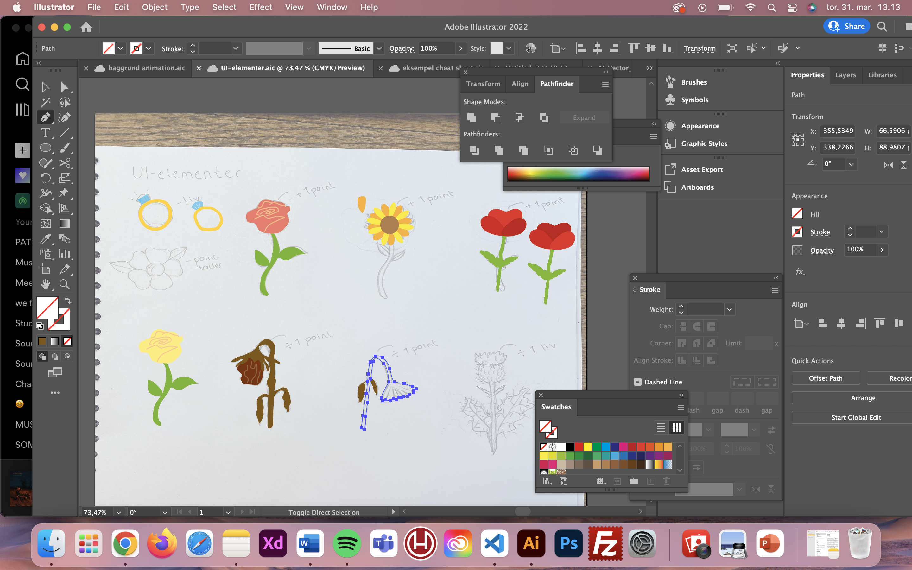

Tema 04 - Grundlæggende animation
Idé & design
Idéen til mit spil kom af inspiration fra virkeligheden. Jeg skal giftes til sommer, og valgte derfor at lave et spil, der kunne være underholdende for vores bryllupsgæster. Jeg har designet mit spil med inspiration fra tegnefilmen Scooby Doo. Jeg har tegnet skitser på papir og efterfølgende rentegnet dem i Adobe Illustrator.
Jeg har brugt solid drawing og assymetri til at skabe liv og udtryk i mine karakterers ansigter. De bløde former og klare farver skal understrege den romantiske og positive stemning i spillet. De visne blomster, som agerer ”de onde” har jeg givet et mere kantet udseende og mørkere farver netop for at understrege kontrasten.
CSS & Javascript
Spillet er kodet med CSS og Javascript. Vi har lært at tegne et State Machine Diagram og kode ud fra det. Selve animationerne har vi kodet i CSS, mens vi har brugt Javascript til at bestemme, hvor og hvornår de forskellige animationer skal aktiveres.